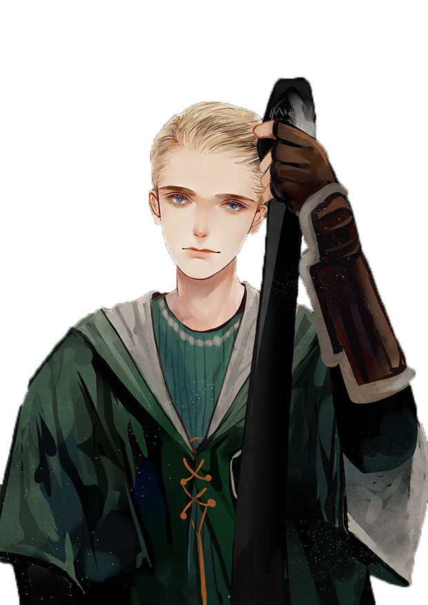
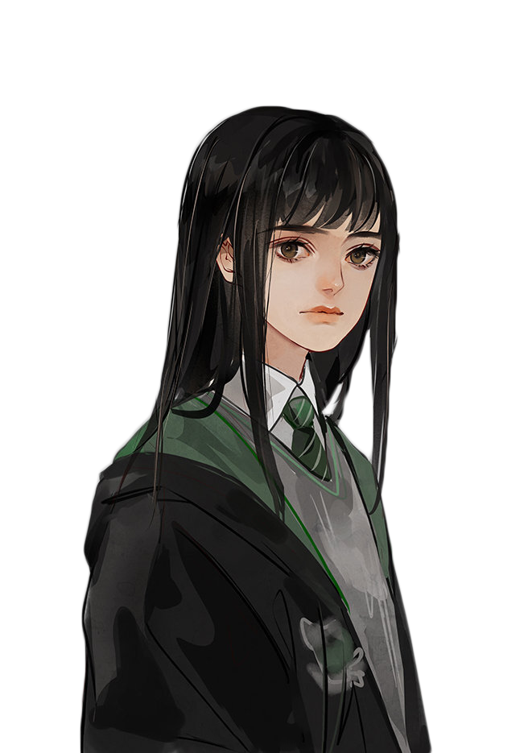
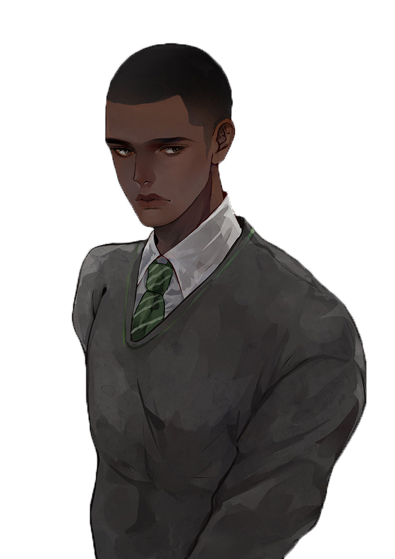

德拉科：怎么样，沙比尼，斯拉格霍恩想干什么？
沙比尼：只是想巴结巴结跟显贵人物沾亲带故的人，不过他没能找到多少。
[这个情报似乎使马尔福不太高兴。]
德拉科：他还邀请了谁？
沙比尼：格兰芬多的麦克拉根。
德拉科：噢，对了，他叔叔是部里的大官。
沙比尼：——还有一个叫贝尔比的，是拉文克劳的——
潘西：别提他了，他是个草包！
沙比尼：——还有隆巴顿、波特和韦斯莱家的那个姑娘。
[德拉科腾地坐了起来，把潘西的手打到一边。]
德拉科：他还邀请了隆巴顿？
沙比尼：对，我想是吧，因为隆巴顿也去了。
德拉科：隆巴顿有什么地方让斯拉格霍恩感兴趣呢？
[沙比尼耸了耸肩。]
德拉科：波特，稀罕的波特，他显然是想亲眼看看‘救世之星’，可是韦斯莱家的那个姑娘！她有什么不寻常的？
潘西：许多男孩喜欢她，就连你也觉得她挺漂亮，是不是，布雷司，而我们都知道你的眼光有多挑剔！
沙比尼：我才不会去碰她那样一个肮脏的小败类呢，不管她长得什么样儿。[沙比尼冷冷地说，潘西顿时喜形于色。马尔福重新倒在她的大腿上，让她继续给他梳理头发。]
德拉科：唉，我真为斯拉格霍恩的品味感到遗憾。大概他有点儿老糊涂了。可惜啊，我父亲一向说他是当时一位很出色的巫师。我父亲曾经在他面前挺得宠的。斯拉格霍恩大概没听说我在车上，不然——
沙比尼：我认为你不太可能受到邀请。我刚来时，他向我打听诺特的父亲，看来他们曾经是老朋友。他听说诺特的父亲被部里逮捕了，他的脸色就沉了下去，结果诺特就没被邀请，不是吗？我认为斯拉格霍恩对食死徒不感兴趣。
德拉科：哼，谁在乎他对什么感兴趣？再说了，他又算个什么东西？不过是个愚蠢的教书匠。我的意思是，没准我明年就不在霍格沃茨了，某个过了气的老胖子喜欢不喜欢我，对我又有什么关系？
潘西：你说什么，没准你明年就不在霍格沃茨了？
德拉科：是啊，你们永远也不会知道，也许我高升了，要去做——嗯——更重要更精彩的事情。
潘西：你指的是——他？
德拉科：妈妈希望我完成学业，但我个人认为，如今这已经没有那么重要了。想想吧……黑魔王得势之后，他还会在乎谁通过了几门O.W.L.或N. E.W.T.吗？当然不会……他只关心别人怎么为他效劳，怎么向他表示赤胆忠心。
沙比尼：你认为你能为他做事？你才十六岁，还没有取得正式的资格呢。
德拉科：我刚才不是说了吗？也许他不在乎我是不是有资格。也许他想让我做的那份工作，是不需要多少资格的。
[克拉布和高尔呆呆地坐在那里，嘴巴张得老大，活像两尊怪兽状的滴水嘴。潘西低头凝视着马尔福，似乎从没见过这么令人敬畏的东西。马尔福显然很满意他制造的这种效果，他指着漆黑的窗外]
德拉科：我看见霍格沃茨了。我们最好赶紧换上校袍吧。
Back
Next